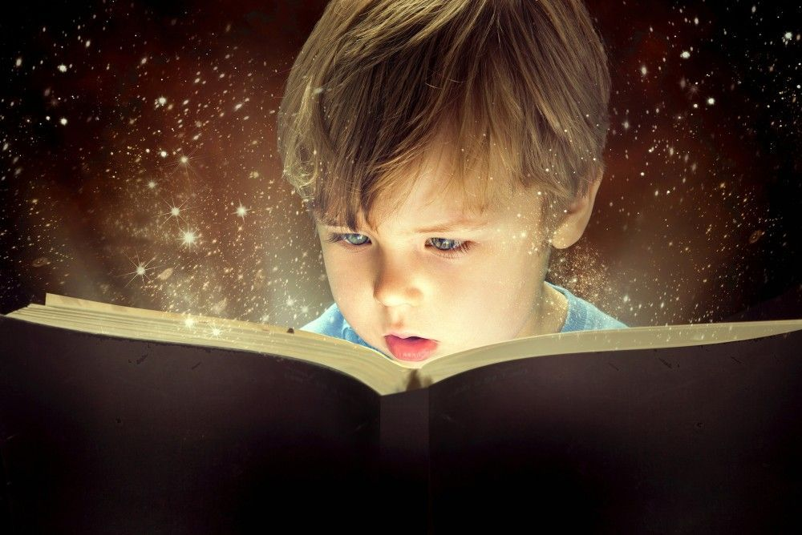
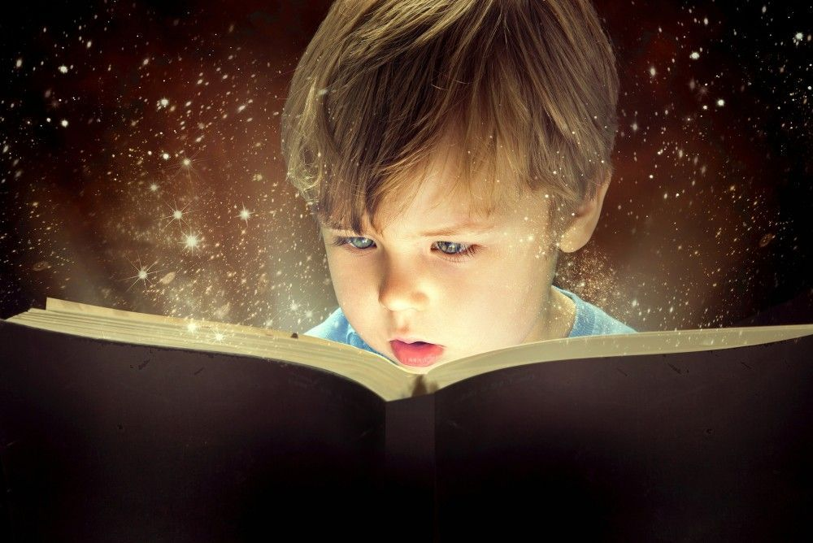
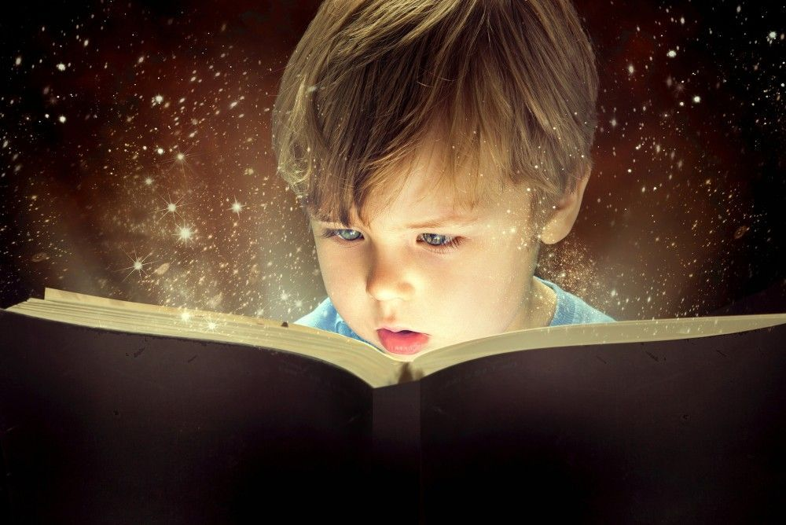

Nuestro sitio web
Inicio
Registro
Libros
Opiniones
Motivacion
¿Como empezar a leer mas?
Benfecios de la lectura
Agudiza la astucia
Estimula el intercambio de información y conocimiento.
La costumbre continuada de leer, retarda la aparición de los síntomas de demencia.
Estimula la percepción.
Estimula la empatía.
Durante la lectura se activan regiones cerebrales que propician procesos de imaginación a partir de los acontecimientos de la narración y vienen a la mente recuerdos y confrontaciones con experiencias personales.
Tras investigaciones realizadas con respecto a las personas que leen, se encontró que los estudiantes exitosos poseen mejores habilidades de expresión, lectura y lenguaje.
Incremento en la capacidad de concentración, análisis e interpretación de texto.

 
